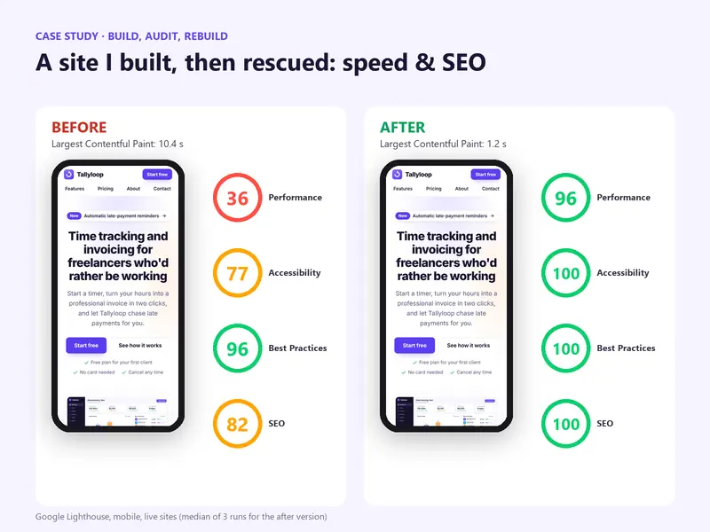

Website rescue · before & after
A good-looking site Google could barely read
A JavaScript-only startup site rebuilt as fast, crawlable pages, keeping the same design. Google went from receiving 1 word to the full page.
36 → 96speed score
10.4 s → 1.2 sload time